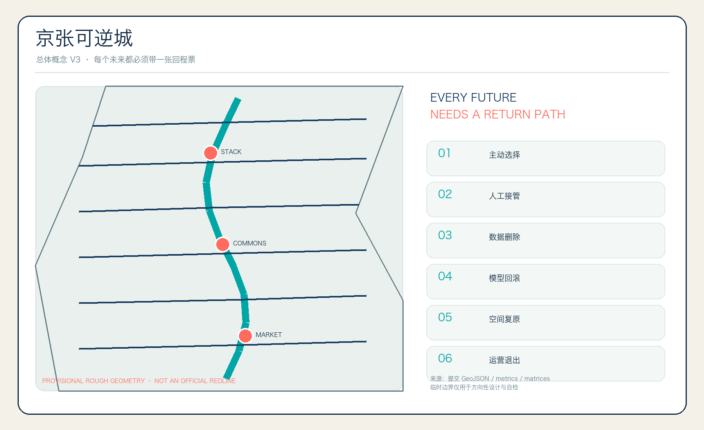
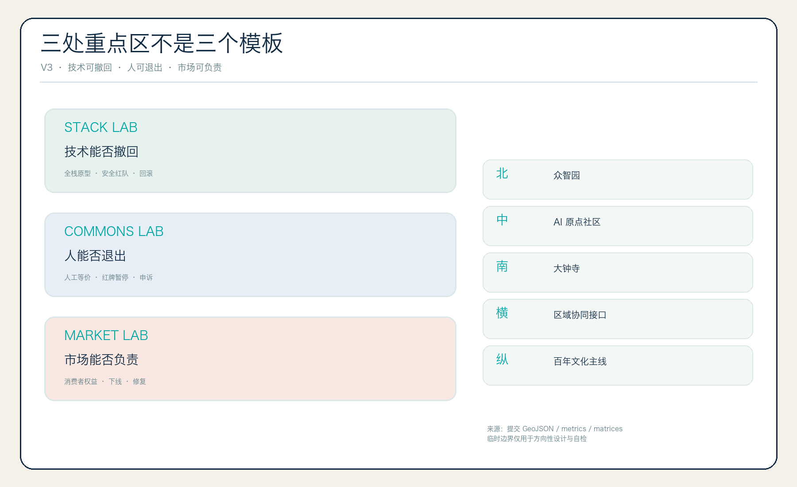
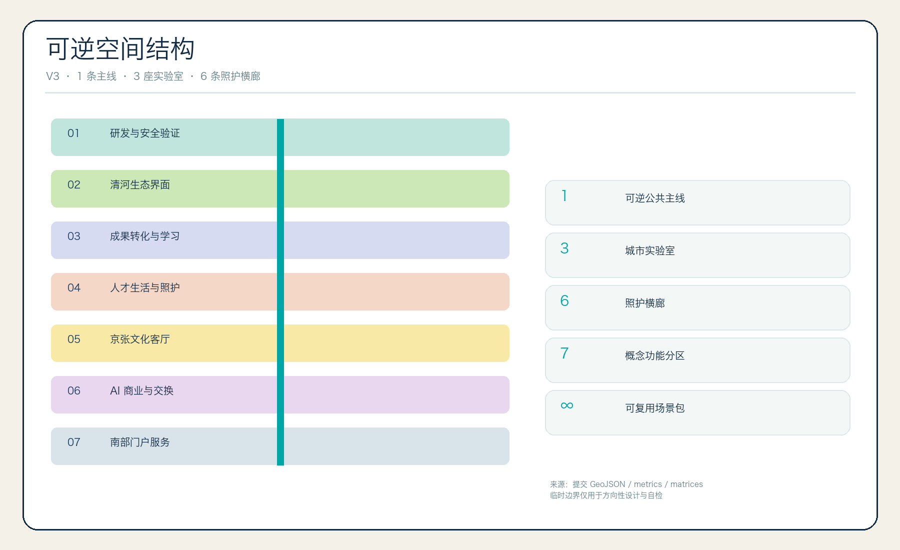
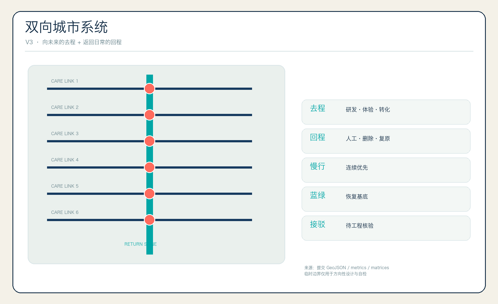
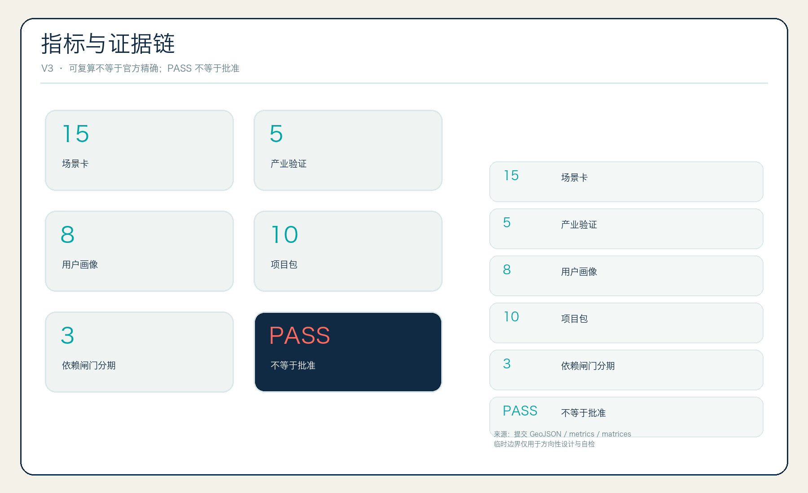

43.6 km²
区域创新接口与未来城市规则。
全球第一条把“可撤回、可复原、可申诉、可再学习”写进城市空间与 AI 运营协议的公共创新带。
zhaoxinyi02 × Codex
所有空间建议均为概念建议。采用仓库 provisional rough geometry，不是官方红线、审批依据或精确面积结论。
Visual QA v2：五张核心图采用差异化图示语法，避免等权图层与重复总图。

区域创新接口与未来城市规则。
产业、生活、慢行、蓝绿与治理结构。
三处重点区差异化验证。

技术能否撤回。
人能否退出。
市场能否负责。

七类概念功能分区完整覆盖临时边界，不构成法定用途调整。

概念慢行关系待道路红线、轨道站点和工程条件核验。
绿色空间是所有试验的恢复基底；三座地标分别提供回程承诺、撤回申诉与版本记忆。
28 个概念基底表达可逆更新空间类型，不对应真实楼栋。拆改留采用 reuse-first 证据流程。
回程票大厅
城市撤回中心
百年版本园
六条照护横廊
安全验证庭院
人工等价服务台
责任市场客厅
端侧算力驿站
京张证据导览
城市 Undo Week
15 张场景卡、5 项产业验证、8 类人物画像；每项均有 Owner、RACI、数据边界、人工复核、停止、恢复与退出。

临时几何内部复算
绿地 union / site
公共空间 union / site
公告 1.3/1.4/1.5 与 agent.1-agent.6 共 23 项均映射到正文、图层、指标、图纸、来源、假设与自检。
确定性校验、空间校验、视觉包装和专业证据校验以提交目录 self_check.json 为准。PASS 不等于官方批准。
官方公告、清权 Agent 任务书、仓库 source registry、专业标准本地快照与 provisional boundaries。无商业地图、远程瓦片或外部图片。
官方几何、控规、现状建筑、权属、市政、消防、文保、河道与绩效数据待补；所有建议待专业深化与人类最终判断。